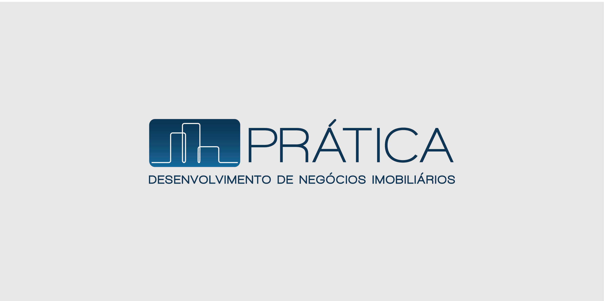
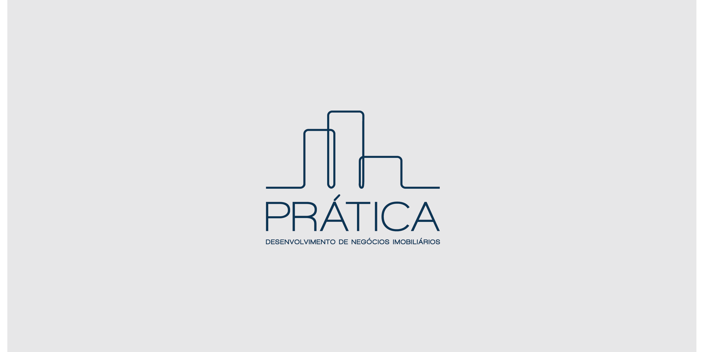
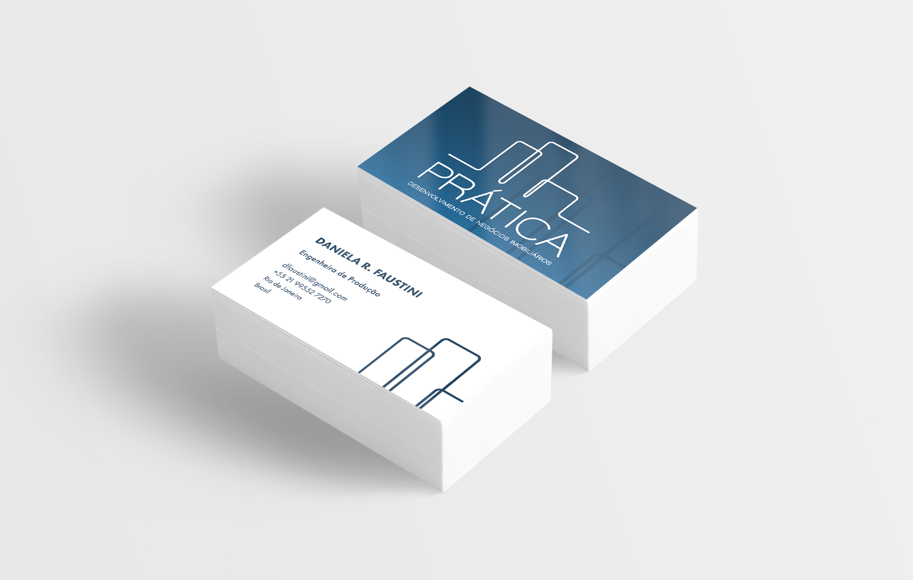
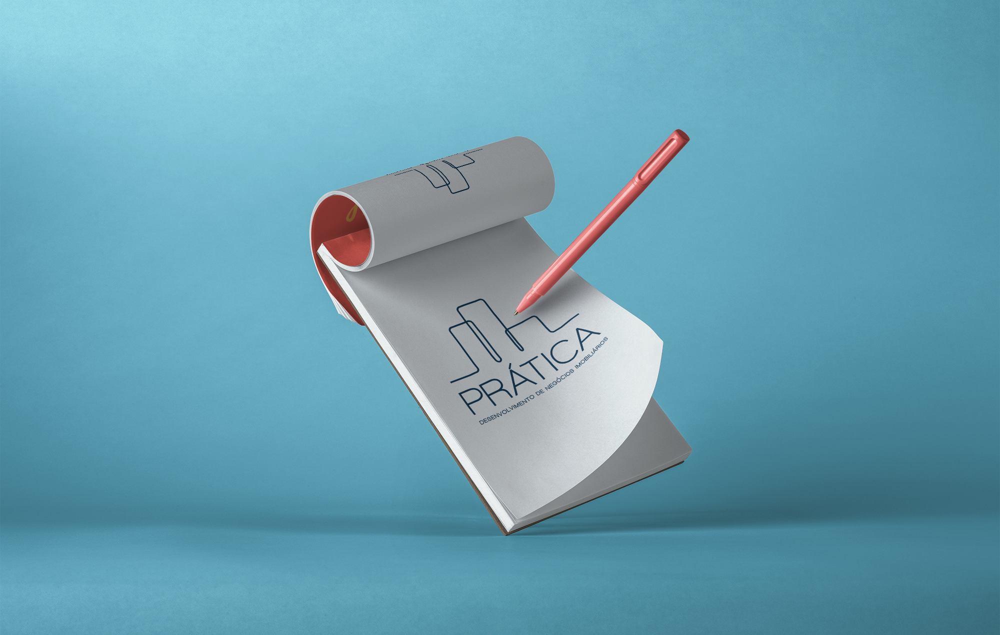

PRÁTICA
Desenvolvimento de Negócios Imobiliários
A identidade visual a ser gerada para a cliente Daniela Faustini seria para sua profissão de Engenheira de Produção que utiliza seu raciocínio lógico e sua trajetória de experiências na área de desenvolvimento de negócios imobiliários. Sendo assim, teve-se em mente aspectos como prédios, planejamento, visão ampla e modernidade.
O desenvolvimento do logotipo nasceu do esboço simples da silhueta de prédios, remetendo à área imobiliária, com diferentes tamanhos como proposta de criatividade e flexibilidade dos projetos que virão a ser feitos pela profissional. Os ângulos foram arredondados para fazer a junção da área tão concreta de desenvolvimento de negócios imobiliários com a personalidade versátil, bem como robusta, de uma profissional mulher.
As cores escolhidas foram tons de azul para passar as ideias de confiança e segurança. Junto à esses elementos, o degradê foi incorporado como elemento para comunicar transparência - um dos principais valores da marca.




voltar